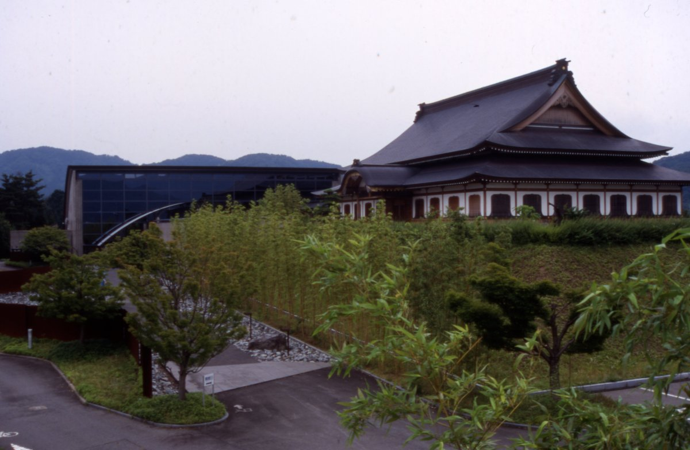

禅ITについて
職場に禅の心を
禅IT（ZenIT）は、2018年にカンザダ・あみるが福井県永平寺町で立ち上げたプロジェクトです。落ち着いて集中でき、生産性の高いソフトウェア開発のスタイルを目指し、ペアプログラミング、テスト駆動開発、ふりかえり（レトロスペクティブ）などシリコンバレーのやり方を、福井の初心者、学生、現役エンジニアに届けました。
なぜ
世界各地で働く中で、1日10時間から20時間、週末も働き、燃え尽きてしまう友人を多く見てきました。労働時間が比較的短いシリコンバレーでも、強いストレスや不安は当たり前とされがちです。テクノロジーは便利ですが、パソコンやスマートフォンの使い過ぎによる影響はまだ十分に分かっていません。
禅ITは、別の働き方を示すことを目指しました。ペアで働き、こまめに休憩を取り、目標をはっきりさせ、思いやりのあるフィードバックをする。来た時よりも元気になって帰れる職場です。
活動内容
- 永平寺町での初心者向け無料ワークショップ：HTMLとJavaScriptのウェブサイト、IchigoJam・IchigoSodaのゲーム、IoTの基礎
- 経験者向けセッション：Docker、Linux、C/C++とテスト駆動開発、オープンソースのGreenplumデータベースへのプルリクエスト
- カリフォルニア大学バークレー校、福井大学、サンタクララでの講演と、シリコンバレーでの企画ワークショップ
- 2019年10月、NHKで禅ITのリモートでの働き方が放送
創立者
- シリコンバレーのプロのソフトウェア開発者、ペアプログラミングの実践者
- 永平寺町エボリューション大使
- One Young World 大使
- 武道、ヨガ、マインドフルネスの14年以上の経験
永平寺町

永平寺町は、幸福度ランキングで常に上位の福井県の緑豊かな町です。曹洞宗の大本山永平寺があり、世界に約1万5千の末寺を持ちます。日本の禅は、坐禅と多くの教えを通して自分を知り、苦しみを減らすことを大切にしています。禅ITのワークショップの多くは、四季の森文化館と、永平寺町魅力発信交流施設えい坊館で開催しました。
関連リンク
福井しらべでの禅ITについてのインタビュー記事